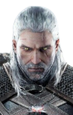

Selecione um personagem
- 
-

Geralt
Também conhecido como Lobo Branco, é um bruxo com habilidades especiais para caçar monstros.
Também conhecido como Lobo Branco, é um bruxo com habilidades especiais para caçar monstros.